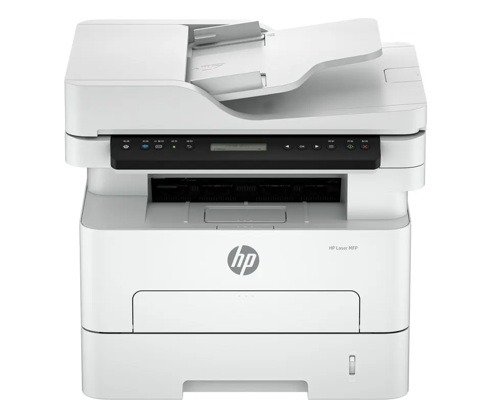

Printers
All-in-One Printers Explained: Is a Print, Scan and Copy Machine Worth It?
Understand all-in-one printer features, advantages, limitations and running costs before choosing a print, scan and copy device.
Introduction: One Device, Several Everyday Tasks
An all-in-one printer is a printer that offers multiple functions to create documents, usually including printing, scanning and copying. Many printers offer extra functionality including faxing, automatic document feeders, double-sided scanning and additional paper trays.
While they provide a great convenience, having one device to handle a lot of day-to-day tasks, it depends on your printing frequency, if you need to scan multiple pages, the quality required and the ongoing costs of consumables and maintenance.

Functions
Printing: Print out documents from computer or mobile devices. Scanning: Convert paper documents into digital documents, usually PDF or images. Copying: Replicate a physical document. Some printers also include scanning to email, scanning to folder, mobile printing, cloud and faxing.
Features can vary quite a bit. A simple printer may only offer flatbed scanning and wireless printing, whilst others with additional functions may include automatic document feeders, double-sided scanning, increased capacity and user verification. Always check the spec sheet for the model you are looking at. Just because it has a scanner doesn’t necessarily mean it has automatic scanning or double-sided scanning.
Pros
The main benefit of an all-in-one printer is that you don’t need to find space for multiple devices. You can have multiple functions all in one place which can be very useful in a home office, small business, classroom or reception area.
They can help simplify tasks by allowing you to scan, print or copy documents without needing to switch between devices. Many will also offer wireless or mobile printing meaning you can have multiple authorised devices printing. A good choice for a small team, having one multifunction printer in a good location can help keep things tidy.
Cons
As it contains multiple functions, if there is an issue with the printer you may lose all functions. A dedicated scanner may still work if there is an issue with the printer. However, if it is a multifunction printer, you may not have this option.
Many small models may have slower scanning speeds, less paper capacity and simple software. A cheap printer may not be intended for high use. Think about how much your business would be affected if there was an issue and if you would like a back up device or service.
Inkjet / Laser
Many inkjet printers are a good option for home use or if you need colour documents or occasional printing of photos. They can be a good compact option however you should consider the cost of the ink cartridges and how long they will sit unused. Check the maintenance requirements and how much ink the cartridges can print.
Many laser multifunction printers can be a good option if you need to print a lot of text-based documents. Black and white can be a good option if you are printing invoices, forms or reports. Colour laser printers can be a good option for business graphics. They may be more expensive to purchase and can have different maintenance requirements. Consider how much you are likely to print, quality of print, speed and overall cost.
Key Features
Consider how fast it can print, recommended monthly print volume, paper capacity, automatic double-sided printing and paper size. For scanning consider the optical resolution, file types, destinations and automatic document feeder. If you regularly scan double-sided documents ensure it has automatic double-sided scanning.
Consider what connections it has. Ensure it works with your devices and operating system, Wi-Fi, Ethernet, USB or mobile print services. If you want to share it in your business consider user accounts, secure print and admin. While having a touch screen can make things easier for common tasks, don’t let it override more important features.
Overall Cost
The initial cost may not be the only thing to consider. Try to work out how much it will cost to run. Consider ink/toner, paper, new rollers, maintenance kits, repairs and any optional service package. Consider how much ink the cartridges/toner can print and how much you expect to print per month. The print yield will be based on standard testing methods and may vary when you are printing documents with lots of graphics, photos or colour.
A cheaper printer may be more expensive to run. A more expensive printer may not be worth the investment if you are only printing a few pages per month. Try to work out what a realistic cost would be for 3 years based on how much you expect to use it and what the cost of supplies are locally. If it is key to your business consider how much it would cost to be down.
Who Should Buy?
A multifunction printer can be a great option for students, home offices, small businesses and teams who regularly print, scan and copy. They can be very convenient if you need to convert between physical and digital documents. Having an automatic document feeder can save time when dealing with multi-page contracts, applications and records.
If you don’t ever scan or copy then a dedicated printer may be sufficient. If you need to scan high quality documents then a dedicated scanner may be a better option. If you have a busy office then you may need a larger departmental MFP with better paper handling and service. Choose the printer based on what you need the most for regularly.
Installation & Security
Ensure you have a sturdy surface to place your device on. Follow the installation instructions, install official drivers and connect to a trusted network. If possible, change the default admin login details, update the firmware and set restrictions on where you can scan to. If you are sharing the printer it may have address books, saved jobs and configuration information so consider security.
Use the recommended paper and supplies. Keep the outside of the printer clean and follow the manufacturers instructions for printhead, rollers and scanner glass. Clean the scanner glass using the correct method and a lint free cloth. Don’t spray any liquids directly onto the glass or any holes.
Conclusion
An all-in-one printer can be a great value option if you regularly need to print, scan and copy. They can help save space and simplify common tasks however can cause a single point of failure. They may also sacrifice some speed or specialist quality. Consider the features, running costs, paper handling, connections and security. Choose a model that can handle your most frequent tasks well. Don’t pay extra for features you won’t use..
Need a hand with your printer or laptop?
Printerworld sells printers, laptops and genuine supplies, and repairs and services both. Bring in your model number and we will help you get it right.